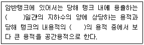
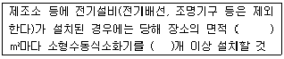
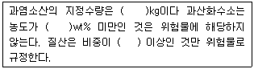

위험물기능사 (2015-10-10 기출문제)
1과목: 화재 예방과 소화방법
1. 위험물안전관리법령상 옥내주유취급소에 있어서 해당 사무소 등의 출입구 및 피난구와 당해 피난구로 통하는 통로.계단 및 출입구에 무엇을 설치하게 하는가?
- 화재감지기
- 스프링클러설비
- 자동화재탐지설비
- 유도등
(정답률: 97%)

2. 다음 중 스프링클러 설비의 소화작용으로 가장 거리가 먼 것은?
- 질식작용
- 희석작용
- 냉각작용
- 억제작용
(정답률: 63%)
3. 다음 중 위험물안전관리법령에서 정한 지정수량이 나머지 셋과 다른 물질은?
- 아세트산
- 히드라진
- 클로로벤젠
- 니트로벤젠
(정답률: 53%)
4. 가연물이 되기 쉬운 조건이 아닌 것은?
- 산소와 친화력이 클 것
- 열전도율이 클 것
- 발열량이 클 것
- 활성화에너지가 작을 것
(정답률: 88%)
5. Hallon 1211에 해당하는 물질의 분자식은?
- CBr2FCl
- CF2ClBr
- CCl2FBr
- FC2BrCl
(정답률: 88%)
6. 위험물안전관리법령상 주유취급소에서의 위험물 취급 기준으로 옳지 않은 것은?
- 자동차에 주유할 때에는 고정주유설비를 이용하여 직접 주유할 것
- 자동차에 경유 위험물을 주유할 때에는 자동차의 원동기를 반드시 정지시킬 것
- 고정주유설비에는 당해 주유설비에 접속한 전용탱크 또는 간이탱크의 배관 외의 것을 통하여서는 위험물을 공급하지 아니할 것
- 고정주유설비에 접속하는 탱크에 접속된 고정주유설비의 사용을 중지할 것
(정답률: 63%)
7. 표준상태에서 탄소 1몰이 완전히 연소하면 몇 L의 이산화탄소가 생성되는가?
- 11.2
- 22.4
- 44.8
- 56.8
(정답률: 78%)
8. 제3류 위험물을 취급하는 제조소는 300명 이상을 수용할 수 있는 극장으로부터 몇 m 이상의 안전거리를 유지하여야 하는가?
- 5
- 10
- 30
- 70
(정답률: 83%)
9. 다음 중 할로겐화합물 소화약제의 주된 소화효과는?
- 부촉매효과
- 희석효과
- 파괴효과
- 냉각효과
(정답률: 86%)
10. 과산화바륨과 물이 반응하였을 때 발생하는 것은?
- 수소
- 산소
- 탄산가스
- 수성가스
(정답률: 74%)
11. 위험물안전관리법령에 따라 위험물을 유별로 정리하여 서로 1m 이상의 간격을 두었을 때 옥내저장소에서 함께 저장하는 것이 가능한 경우가 아닌 것은?
- 제1류 위험물(알칼리금속의 과산화물 또는 이를 함유한 것을 제외한다)과 제5류 위험물을 저장하는 경우
- 제3류 위험물 중 알킬알루미늄과 제4류 위험물(알킬알루미늄 또는 알킬리튬을 함유한 것에 한한다)을 저장하는 경우
- 제1류 위험물과 제3류 위험물 중 금수성물질을 저장하는 경우
- 제2류 위험물 중 인화성고체와 제4류 위험물을 저장하는 경우
(정답률: 54%)
12. 소화설비의 설치기준에서 유기과산화물 1,000kg은 몇 소요단위에 해당하는가?
- 10
- 20
- 100
- 200
(정답률: 63%)
13. 위험물안전관리에 대한 설명 중 옳지 않은 것은?(관련 규정 개정전 문제로 여기서는 기존 정답인 4번을 누르면 정답 처리됩니다. 자세한 내용은 해설을 참고하세요.)
- 이동탱크저장소는 위험물안전관리자 선임대상에 해당되지 않는다.
- 위험물안전관리자가 퇴직한 경우 퇴직한 날부터 30일 이내에 다시 안전관리자를 선임하여야 한다.
- 위험물안전관리자를 선임한 경우에는 선임한 날로부터 14일 이내에 소방본부장 또는 소방서장에게 신고하여야 한다.
- 위험물안전관리자가 일시적으로 직무를 수행할 수 없는 경우에는 안전교육을 받고 6개월 이상 실무 경력이 있는 사람을 대리자로 지정할 수 있다.
(정답률: 81%)
14. 철분, 금속분, 마그네슘의 화재에 적응성이 있는 소화약제는?
- 탄산수소염류분말
- 할로겐화합물
- 물
- 이산화탄소
(정답률: 82%)
15. 주유취급소의 벽(담)에 유리를 부착할 수 있는 기준에 대한 설명으로 옳은 것은?
- 유리 부착 위치는 주입구, 고정주유설비로부터 2m 이상 이격되어야 한다.
- 지반면으로부터 50센티미터를 초과하는 부분에 한하여 설치하여야 한다.
- 하나의 유리판 가로의 길이는 2m 이내로 한다.
- 유리의 구조는 기준에 맞는 강화유리로 하여야 한다.
(정답률: 55%)
16. 위험물안전관리법령상 개방형 스프링클러 헤드를 이용하는 스프링클러설비에서 수동식 개방밸브를 개방 조작하는 데 필요한 힘은 얼마 이하가 되도록 설치하여야 하는가?
- 5kg
- 10kg
- 15kg
- 20kg
(정답률: 58%)
17. 제조소의 옥외에 모두 3개의 휘발유 취급탱크를 설치하고 그 주위에 방유제를 설치하고자 한다. 방유제 안에 설치하는 각 취급탱크의 용량이 5만L, 3만L, 2만L 일 때 필요한 방유제의 용량은 몇 L 이상인가?
- 66000
- 60000
- 33000
- 30000
(정답률: 59%)
18. 제1종 분말소화약제의 주성분으로 사용하는 것은?
- KHCO3
- H2SO4
- NaHCO3
- NH4H2PO4
(정답률: 64%)
19. 트리에틸알루미늄의 화재시 사용할 수 있는 소화약제(설비)가 아닌 것은?
- 마른모래
- 팽창질석
- 팽창진주암
- 이산화탄소
(정답률: 84%)
20. 금속화재를 옳게 설명한 것은?
- C급 화재이고, 표시색상은 청색이다.
- C급 화재이고, 표시색상은 없다.
- D급 화재이고, 표시색상은 청색이다.
- D급 화재이고, 표시색상은 없다.
(정답률: 82%)
2과목: 위험물의 화학적 성질 및 취급
21. CH3COC2H5의 명칭 및 지정수량을 옳게 나타낸 것은?
- 메틸에틸케톤, 50L
- 메틸에틸케톤, 200L
- 메틸에틸에테르, 50L
- 메틸에틸에테르, 200L
(정답률: 60%)
22. 위험물안전관리법령상 정기점검 대상인 제조소 등의 조건이 아닌 것은?
- 예방규정 작성대상인 제조소 등
- 지하탱크저장소
- 이동탱크저장소
- 지정수량 5배의 위험물을 취급하는 옥외탱크를 둔 제조소
(정답률: 70%)
23. 위험물제조소 등의 종류가 아닌 것은?
- 간이탱크저장소
- 일반취급소
- 이송취급소
- 이동판매취급소
(정답률: 73%)
24. 다음 물질 중 물에 대한 용해도가 가장 낮은 것은?
- 아크릴산
- 아세트알데히드
- 벤젠
- 글리세린
(정답률: 63%)
25. 니트로글리세린에 관한 설명으로 틀린 것은?
- 상온에서 액체 상태이다.
- 물에는 잘 녹지만 유기용제에는 녹지 않는다.
- 충격 및 마찰에 민감하므로 주의해야 한다.
- 다이너마이트의 원료로 쓰인다.
(정답률: 73%)
26. 1차 알코올에 대한 설명으로 가장 적절한 것은?
- OH기의 수가 하나이다.
- OH기가 결합된 탄소 원자에 붙은 알킬기의 수가 하나이다.
- 가장 간단한 알코올이다.
- 탄소의 수가 하나인 알코올이다.
(정답률: 65%)
27. 위험물안전관리법령상 제4류 위험물 운반용기의 외부에 표시하여야 하는 주의사항을 모두 옳게 나타낸 것은?
- 화기엄금 및 충격주의
- 가연물 접촉주의
- 화기엄금
- 화기주의 및 충격주의
(정답률: 67%)
28. 다음 중 지정수량이 가장 큰 것은?
- 과염소산칼륨
- 트리니트로톨루엔
- 황린
- 유황
(정답률: 64%)
29. 알루미늄분이 염산과 반응하였을 경우 생성되는 가연성가스는?
- 산소
- 질소
- 메탄
- 수소
(정답률: 65%)
30. 위험물안전관리법령상 벌칙의 기준이 나머지 셋과 다른 하나는?(관련 규정 개정전 문제로 여기서는 기존 정답인 4번을 누르면 정답 처리됩니다. 자세한 내용은 해설을 참고하세요.)
- 제조소등에 대한 긴급 사용정지 제한 명령을 위반한 자
- 탱크시험자로 등록하지 아니하고 탱크시험자의 업무를 한 자
- 저장소 또는 제조소 등이 아닌 장소에서 지정수량 이상의 위험물을 저장 또는 취급한 자
- 제조소 등의 완공검사를 받지 아니하고 위험물을 저장.취급한 자
(정답률: 73%)
31. 위험물안전관리법령상 운송책임자의 감독 지원을 받아 운송하여야 하는 위험물에 해당하는 것은?(오류 신고가 접수된 문제입니다. 반드시 정답과 해설을 확인하시기 바랍니다.)
- 알킬알루미늄, 산화프로필렌, 알킬리튬
- 알킬알루미늄, 산화프로필렌
- 알킬알루미늄, 알킬리튬
- 산화프로필렌, 알킬리튬
(정답률: 80%)
32. 다음은 위험물을 저장하는 탱크의 공간용적 산정기준이다. ( )에 알맞은 수치로 옳은 것은?

- 7, 1/100
- 7, 5/100
- 10, 1/100
- 10, 5/100
(정답률: 69%)
33. 분자량이 약 110인 무기과산화물로 물과 접촉하여 발열하는 것은?
- 과산화마그네슘
- 과산화벤젠
- 과산화칼슘
- 과산화칼륨
(정답률: 55%)
34. 위험물안전관리법령에서 정한 알킬알루미늄 등을 저장 또는 취급하는 이동탱크 저장소에 비치해야 하는 물품이 아닌 것은?
- 방호복
- 고무장갑
- 비상조명등
- 휴대용확성기
(정답률: 63%)
35. 다음 중 산을 가하면 이산화염소를 발생시키는 물질로 분자량이 약 90.5인 것은?
- 아염소산나트륨
- 브롬산나트륨
- 옥소산칼륨(요오드산칼륨)
- 중크롬산나트륨
(정답률: 68%)
36. 위험물안전관리법령에서 정한 주유취급소의 고정주유설비 주위에 보유하여야 하는 주유공지의 기준은?
- 너비 10m 이상 길이 6m 이상
- 너비 15m 이상 길이 6m 이상
- 너비 10m 이상 길이 10m 이상
- 너비 15m 이상 길이 10m 이상
(정답률: 67%)
37. 위험물안전관리법령에서 정한 소화설비의 설치기준에 따라 다음 ( )에 알맞은 숫자를 차례대로 나타낸 것은?

- 50, 1
- 50, 2
- 100, 1
- 100, 2
(정답률: 62%)
38. 과산화벤조일 취급시 주의사항에 대한 설명 중 틀린 것은?
- 수분을 포함하고 있으면 폭발하기 쉽다.
- 가열,충격,마찰을 피해야 한다.
- 저장용기는 차고 어두운 곳에 보관한다.
- 희석제를 첨가하여 폭발성을 낮출 수 있다.
(정답률: 57%)
39. 위험물안전관리법령상 다음 ( )에 알맞은 수치를 모두 합한 것은?

- 349.36
- 549.36
- 337.49
- 537.49
(정답률: 67%)
40. 위험물안전관리법령에서 정한 아세트알데히드 등을 취급하는 제조소의 특례에 따라 "아세트 알데히드등을 취급하는 설비는 ( ) ,( ),동,( ) 또는 이들을 성분으로 하는 합금으로 만들지 아니할것"의 지문중 ( )에 해당하지 않는 것은?
- 금
- 은
- 수은
- 마그네슘
(정답률: 73%)
41. C6H2(NO2)3OH와 CH3NO3의 공통성질에 해당하는 것은?
- 니트로화합물이다.
- 인화성과 폭발성이 있는 액체이다.
- 무색의 방향성 액체이다.
- 에탄올에 녹는다
(정답률: 47%)
42. 제4류 위험물에 대한 일반적인 설명으로 옳지 않은 것은?
- 대부분 연소 하한값이 낮다.
- 발생증기는 가연성이며 대부분 공기보다 무겁다.
- 대부분 무기화합물이므로 정전기 발생에 주의한다.
- 인화점이 낮을수록 화재 위험성이 높다.
(정답률: 57%)
43. 분말의 형태로서 150마이크로미터의 체를 통과하는 것이 50중량퍼센트 이상인 것만 위험물로 취급되는 것은?(오류 신고가 접수된 문제입니다. 반드시 정답과 해설을 확인하시기 바랍니다.)
- Zn
- Fe
- Ni
- Ca
(정답률: 61%)
44. 과염소산칼륨의 성질에 관한 설명 중 틀린 것은?
- 무색,무취의 결정이다.
- 알코올, 에테르에 잘 녹는다.
- 진한 황산과 접촉하면 폭발할 위험이 있다.
- 400℃ 이상으로 가열하면 분해하여 산소가 발생할 수 있다.
(정답률: 53%)
45. 위험물제조소의 환기설비 중 급기구는 급기구가 설치된 실의 바닥면적 몇 m2마다 1개 이상으로 설치하여야 하는가?
- 100
- 150
- 200
- 800
(정답률: 59%)
46. 살충제 원료로 사용되기도 하는 암회색 물질로 물과 반응하여 포스핀 가스를 발생할 위험이 있는 것은?
- 인화아연
- 수소화나트륨
- 칼륨
- 나트륨
(정답률: 74%)
47. 위험물안전관리법령상 예방규정을 정하여야 하는 제조소 등의 관계인은 위험물제조소 등에 대하여 기술기준에 적합한지의 여부를 정기적으로 점검을 하여야 한다. 법적 최소 점검주기에 해당하는 것은?(단, 100만 리터 이상의 옥외탱크 저장소는 제외한다)
- 월 1회 이상
- 6개월 1회 이상
- 연 1회 이상
- 2년 1회 이상
(정답률: 73%)
48. 위험물안전관리법령상 이동탱크저장소에 의한 위험물의 운송 시 장거리에 걸친 운송을 하는 때에는 2명 이상의 운전자로 하는 것이 원칙이다. 다음 중 예외적으로 1명의 운전자가 운송하여도 되는 경우의 기준으로 옳은 것은?
- 운송도중에 2시간 이내마다 10분 이상씩 휴식하는 경우
- 운송도중에 2시간 이내마다 20분 이상씩 휴식하는 경우
- 운송도중에 4시간 이내마다 10분 이상씩 휴식하는 경우
- 운송도중에 4시간 이내마다 20분 이상씩 휴식하는 경우
(정답률: 79%)
49. 위험물안전관리법령상 산화성 액체에 대한 설명으로 옳은 것은?
- 과산화수소는 농도와 밀도가 비례한다.
- 과산화수소는 농도가 높을수록 끓는점이 낮아진다.
- 질산은 상온에서 불연성이지만 고온으로 가열하면 스스로 발화한다.
- 질산을 황산과 일정 비율로 혼합하여 왕수를 제조할 수 있다.
(정답률: 46%)
50. 다음 물질 중 인화점이 가장 높은 것은?
- 아세톤
- 디에틸에테르
- 에탄올
- 벤젠
(정답률: 41%)
51. 니트로셀룰로오스의 위험성에 대하여 옳게 설명한 것은?
- 물과 혼합하면 위험성이 감소한다.
- 공기 중에서 산화되지만 자연발화의 위험은 없다.
- 건조할수록 발화의 위험성이 낮다.
- 알코올과 반응하여 발화한다.
(정답률: 51%)
52. 휘발유의 성질 및 취급시의 주의사항에 관한 설명 중 틀린 것은?
- 증기가 모여 있지 않도록 통풍을 잘 시킨다.
- 인화점이 상온이므로 상온 이상에서는 취급시 각별한 주의가 필요하다.
- 정전기 발생에 주의해야 한다.
- 강산화제 등과 혼촉시 발화할 위험이 있다.
(정답률: 56%)
53. 제2류 위험물에 대한 설명으로 옳지 않은 것은?
- 대부분 물보다 가벼우므로 주수소화는 어려움이 있다.
- 점화원으로부터 멀리하고 가열을 피한다.
- 금속분은 물과의 접촉을 피한다.
- 용기파손으로 인한 위험물의 누설에 주의한다.
(정답률: 76%)
54. 아세트산에틸의 일반 성질 중 틀린 것은?
- 과일냄새를 가진 휘발성 액체이다.
- 증기는 공기보다 무거워 낮은 곳에 체류한다.
- 강산화제와의 혼촉은 위험하다.
- 인화점은 -20℃ 이하이다.
(정답률: 48%)
55. 위험물안전관리법령에서 정하는 위험등급 Ⅱ에 해당하지 않는 것은?
- 제1류 위험물 중 질산염류
- 제2류 위험물 중 적린
- 제3류 위험물 중 유기금속화합물
- 제4류 위험물 중 제2석유류
(정답률: 57%)
56. 유황의 특성 및 위험성에 대한 설명 중 틀린 것은?
- 산화성 물질이므로 환원성 물질과 접촉을 피해야 한다.
- 전기의 부도체이므로 전기 절연체로 쓰인다.
- 공기 중 연소시 유해가스를 발생한다.
- 일반상태의 경우 분진폭발의 위험성이 있다.
(정답률: 54%)
57. 공기를 차단하고 황린을 약 몇 ℃로 가열하면 적린이 생성되는가?
- 60
- 100
- 150
- 260
(정답률: 65%)
58. 위험물안전관리법령상 제4석유류를 저장하는 옥내저장탱크의 용량은 지정수량의 몇 배 이하이어야 하는가?
- 20
- 40
- 100
- 150
(정답률: 45%)
59. 알루미늄 분말의 저장 방법 중 옳은 것은?
- 에틸알코올 수용액에 넣어 보관한다.
- 밀폐 용기에 넣어 건조한 것에 보관한다.
- 폴리에틸렌병에 넣어 수분이 많은 곳에 보관한다.
- 염산 수용액에 넣어 보관한다.
(정답률: 65%)
60. 나트륨에 관한 설명으로 옳은 것은?
- 물보다 무겁다.
- 융점이 100℃ 보다 높다.
- 물과 격렬히 반응하여 산소를 발생시키고 발열한다.
- 등유는 반응이 일어나지 않아 저장에 사용된다.
(정답률: 60%)